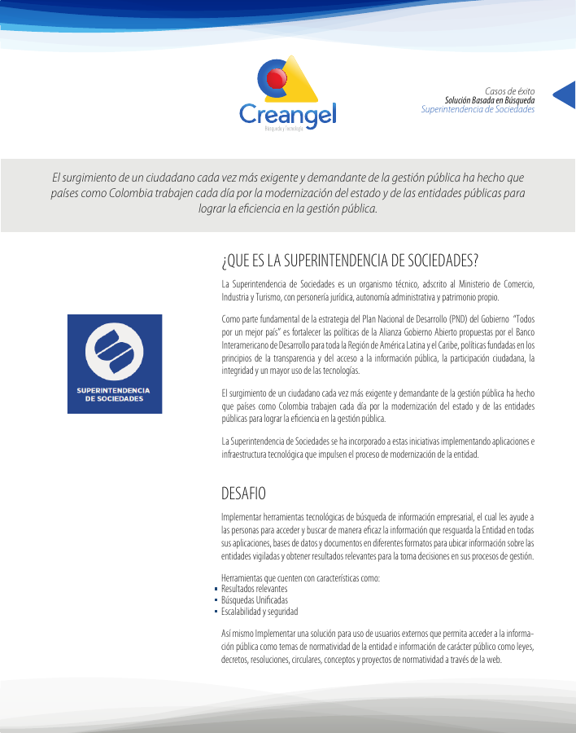
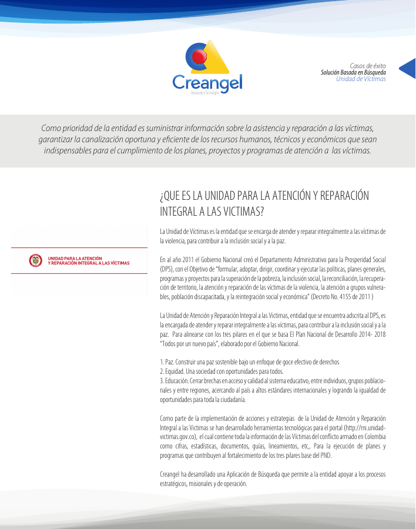
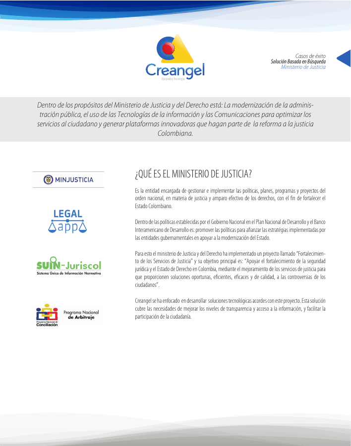

PDF · 4.6 MBCaso Superintendencia de SociedadesPublicación del archivo de Creangel.Abrir PDFDescargar
PDF · 4.6 MBCaso Unidad para las VíctimasPublicación del archivo de Creangel.Abrir PDFDescargar
PDF · 4.8 MBCaso Ministerio de JusticiaPublicación del archivo de Creangel.Abrir PDFDescargar
PDFPDF · 3.5 MBABC de la Ley de TransparenciaDocumento de referencia enlazado por Creangel; fuente: Rama Judicial.Abrir PDFDescargar